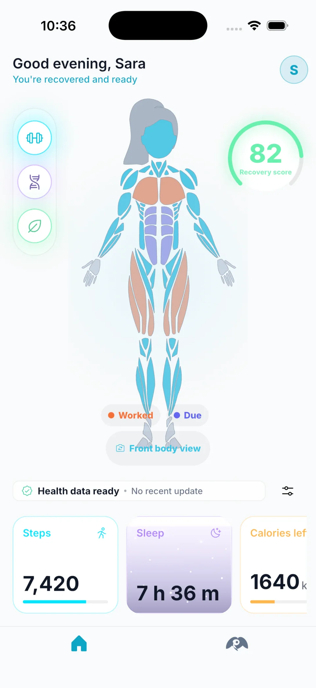
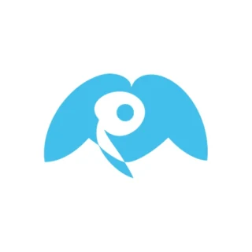
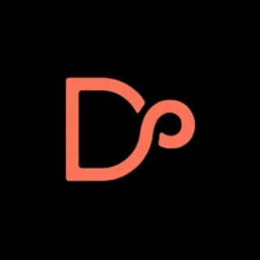
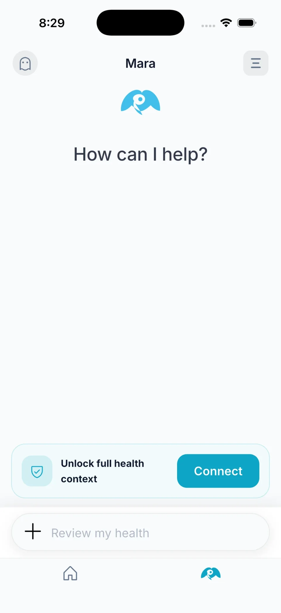
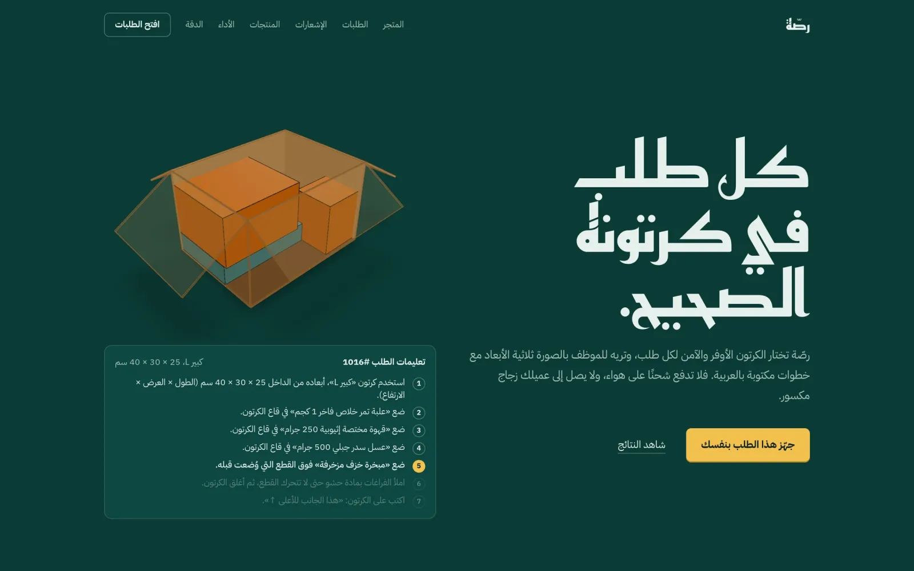
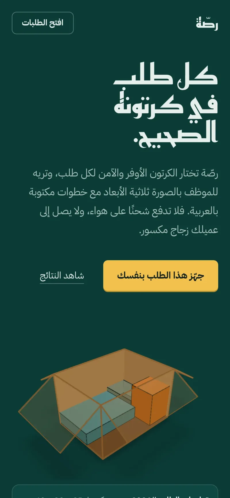
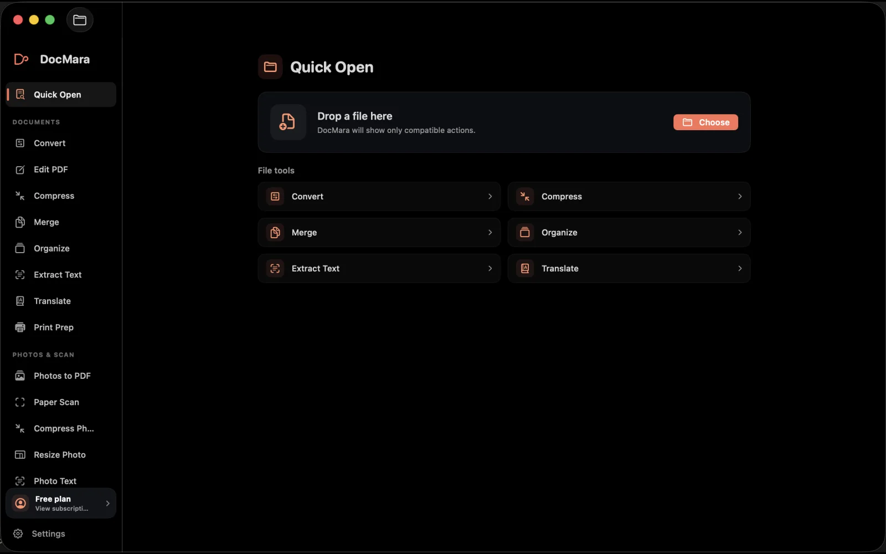
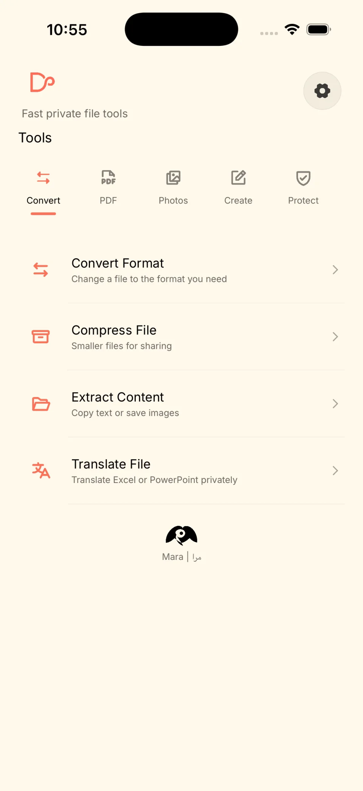
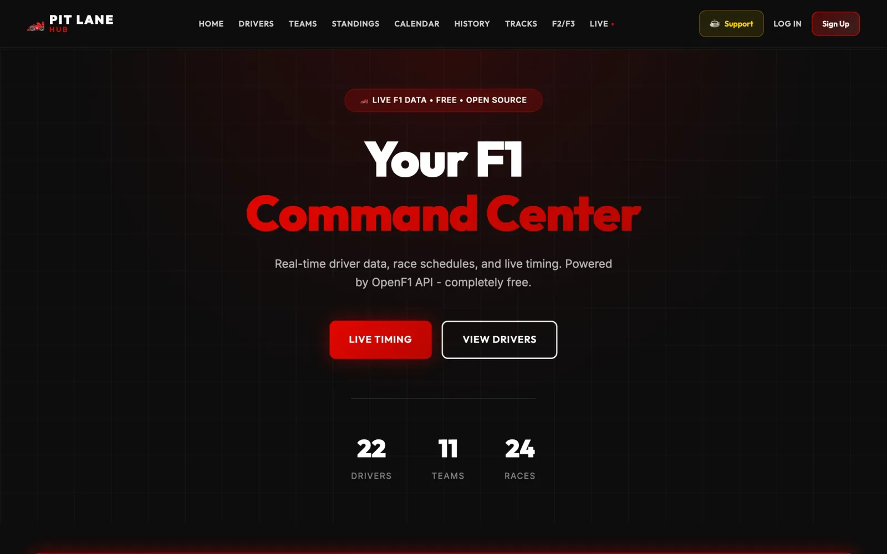

Mara
AI-powered health & wellness platform.
Product requirements, AI workflows, APIs, QA, analytics and system integrations.
38 private beta users. Completed Misk Launchpad Cohort 9.
Explore Mara
AI Product & Systems
I turn user and business problems into requirements, system workflows, API integrations and shipped products.


1,200
weekly users on Echo
38
private beta users on Mara
Misk Launchpad Cohort 9
6,329
GitHub contributions in the last year

AI-powered Gulf travel platform.
Integrates the OpenAI API with a local knowledge base for natural-language assistance, personalized trip planning and traveler safety.
OpenAI API, local knowledge base, FastAPI, Supabase, Firebase Auth
AI packing assistant for Saudi online stores.
Built end to end in two days in Tuwaiq Academy’s AI product programme with Startupbootcamp and Meta.
Gemini reads Arabic and English product pages; a 3D packing engine picks the cheapest safe carton; every run is monitored in production.
View Rassah

Computer Information Systems graduate focused on AI-powered products, technical product development and digital systems. I translate user and business problems into product requirements, system workflows, API integrations, prototypes and production releases. I have built and shipped products across AI workflows, analytics, UX, monetization, QA and system integration.
Jun 2026 – Sep 2026
Digital Systems & Business Analysis Co-op Trainee
QA testing, system reviews, issue analysis and technical documentation; analyzed operational data and IT processes, reviewed system requirements, and collaborated across governance, cybersecurity, networking and digital systems in an enterprise environment.
2022 – 2026
B.Sc. in Computer Information Systems
Arabic (native), English (professional working proficiency)
Tuwaiq Academy — Cloud Engineering Solutions Program Using Google Compute Engine
DeepLearning.AI — Mathematics for Machine Learning and Data Science Specialization
Tuwaiq Academy — Fundamentals of Software Testing Using Agile and Automation
Harvard — CS50’s Introduction to Computer Science
Huawei — HCIA-Security V3.0
Private document toolkit.
Scan, compress, convert, organise and sign files on device, in Arabic and English.
On the App Store and Mac App Store.



Live timing, standings, driver comparisons, track maps and seasons from 2023 to 2026. Free and open source.
Next.js, React, TypeScript.
Rules, skills and a delivery gate for Claude Code that make the agent prove its work before anything ships.
Python, Claude Code.
View on GitHubA morning briefing, replies drafted in your tone and rules that act on their own, for Gmail and Outlook in more than 30 languages.
Next.js, Firebase, Claude.
View on GitHubScans dependency files for abandoned and unmaintained open-source packages before they break a production build.
TypeScript.
View on GitHubTags and virtual albums built on hand-written data structures, for the CSC 212 Data Structures course.
Java.
View on GitHubOpen to AI product, technical product and systems roles.